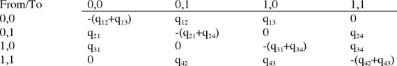
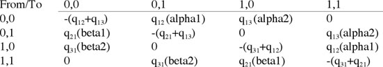

Pagel's 1994 Correlation method
Peter Midford & Wayne MaddisonThe Pagel94 module implements a test of independent evolution of two binary characters. This test was first described in Pagel (1994). Although this test has been available in Pagel’s own program Discrete, this module is not a simple translation of Discrete. In particular, although the module calculates the same likelihood value for a given combination of tree and character states, the maximum likelihood search and character simulation portions of the module utilize existing Mesquite code. The remainder of this documentation consists of an overview of the theory of the test, followed by detailed discussion of the methods used in the three phases of the test.
Contents
- Theory
- The evaluator
- The maximum likelihood estimation process
- Estimating statistical significance
- Options for Users
- References
Theory
Pagel (1994) describes a test of independent evolution of two binary characters. The test compares the ratio of likelihoods of two models: one model where the rates of change in each character are independent of the state of the other and a second model where rates of change depend on the state of the other character. The significance of the ratio is tested by comparison with simulated data, and Pagel warns against using a standard chi-square-based test in most cases.The models are expressed as matrices of instantaneous transition rates, with each row and column specifying a pair of character states. The model of dependent change specifies 8 parameters and can be specified by the following matrix:

The zero values on the antidiagonal prevent simultaneous changes of both characters and the entries on the main diagonal normalize the matrix.
The model of independent change describes the case where the transition rates of each variable are independent of the state of the other. Pagel 1994 describes the independent model as a pair of 2x2 matrices, one for each variable. The forward (0->1) and backward (1->0) change rates of each variable are referred to as alpha and beta respectively. Another approach, taken in this module is to treat the independent case as a degenerate form of the dependent model. The model of independent change specifies 4 parameters, which can be obtained from the dependent model by setting the pairs of parameters across the antidiagonal (q13 and q24, q12 and q34, q21 and q43, q31 and q42) equal.

Our treatment of the independent (four-parameter) model is different from Pagel's; we treat it as a version of the eight-parameter model constrained by setting four pairs of parameters equal (q13=q24, q12=q34, q21=q43, and q31=q42). Our four-parameter model specifies that the antidiagonal elements, indicating rates of simultaneous change, are also zero, in accord with the eight-parameter model used by us and Pagel. In contrast, Pagel (1994) treats his four-parameter model differently, as a combination of two separate asymmetric models, each represented by a 2x2 matrix. Thus, Pagel argues (p. 41) that his four-parameter model is not a constrained version of the eight-parameter model.
We feel that our formulation of the four-parameter model is a valid alternative for three reasons. First, it uses the same assumption (zero rates of simultaneous change) as used in the eight-parameter model. Second, in our explorations it appeared to arrive at the same likelihoods as obtained by Pagel's two-asymmetric-model approach. We have tested the assumption of equivalence numerous times with both this module and Discrete. Even at high transition rates, we could find no differences between the two approaches that were not more appropriately explained as stochastic behavior in the likelihood searches of the respective programs. This stochastic behavior can be observed by simply re-running an analysis multiple times and looking at both the parameter estimates and (especially for the 8-parameter model) the likelihood values.
Third, setting the anti-diagonals to zero in the four parameter model appears justified on first principles. As Pagel points out (p. 40), setting simultaneous rates to zero does not preclude the possibility of both characters changing state over a longer period of time. However, because these are instantaneous rates, the diagonal indicates the rate of events where both characters change over the same infinitesimal time dt. No matter how large the rate of character change is, the amount of time spent in transitions is still zero, thus the chance of two independent characters changing at the same time is also zero.
To calculate the likelihood of a specific set of rates giving rise to the observed data at the tips of the particular tree, the rates must be converted to transition probabilities for each branch of the tree. Because the model is based on the assumption of a Markov process, the transition probabilities for a particular branch are dependent only on the rate matrix and the length of the branch. The conversion entails calculating exp(lA) where A is the rate matrix and l is the branch length.
The calculation itself starts from the tips of the tree and works down each branch toward the root. At each branch the calculated likelihoods at the upper end are (effectively) multiplied by a transpose of the transition matrix to obtain the set of likelihoods at the lower end. The likelihoods at the tips are just the observed data.
There are several possible ways to combine likelihood calculations at the root. Currently the module simply adds the likelihoods for each of the four possible root states to get the overall likelihood for the model. Other combination options, including weighting root states empirically from their frequencies at the tips or by specifying an explicit prior distribution may be made available in future releases.
The Evaluator
The evaluator calculates the likelihood of a specific set of rates giving rise to the observed data at the tips of the particular tree. This release uses two methods to calculate the exponentation of the rate matrix. The first method, which is faster, uses spectral decomposition (e.g., eigenvalues and eigenvectors). However, this method does not work correctly when the matrix has complex eigenvalues. In this case, or any other where the spectral decomposition method produces a transition probability matrix with negative entries, the evaluator redoes the calculation using a method first described by Putzer (1966). This method is slower, but appears to handle matrices with complex eigenvalues correctly.The current release does not allow the user to directly specify a set of parameter values and get a likelihood value. This facility may be added to future releases.
The Maximum likelihood estimation process
To estimate maximum likelihood values for the model parameters, the Pagel94 module requires an optimizer that works with multiple variables and does not require derivatives of the function being optimized. To do this, the module calls on the widely used Brent(1973) multivariate optimizer. This optimizer has the important property of not requiring derivatives of the function being maximized. To improve the chances of finding a global minimum, the module adds two methods to the optimization process. First the tree is scaled to a height of one, which reduces the changes of overflow. Second the module chooses the best result from multiple optimizer runs starting from different points. For optimizing the independent (four parameter) model, the module runs the optimizer from three start points (10, 10, 10, 10), (0.01, 10, 0.01, 10), and (10, 0.01, 10, 0.01).Because dependent (eight parameter) models generally have more rugged likelihood surfaces, we found that additional searching sometimes produced substantially better answers. One example of this is the great ape data set discussed in Pagel94 and (in expanded form) in the Discrete manual. To choose multiple starting points, the model starts by estimating parameters for two six-parameter models, one where the rates of the first variable is dependent on the second but rates of the second are independent of the first (four rates for the first variable + two rates for the second), and the other with the dependencies reversed. Each six parameter model is optimized starting from the (saved) optimum of the four parameter model, with the additional parameters started from initial values that correspond to the four parameter model. The search for the eight- parameter model uses multiple start points derived from the six-parameter model results. The first two searches start from the values from each of the six-parameter models. Additional searches, controlled by the Likelihood iterations command, start from randomized linear combinations of the values from the six-parameter models. Specifically, the first four parameters for the eight-parameter search start from points on the line lying between the corresponding parameters for the six-parameter models. Because the random element is Gaussian distributed, the actual start point may lay outside the portion bracketed by the two values. The remaining four values are set from a corresponding parameter drawn from one of the six-parameter models with Gaussian noise added.
Note that the value of additional iteration depends both on the particular tree and data and on the goal of the analysis. If finding the best values for the parameters is important, more iteration will do a more through search of parameter space. If the goal is simply to perform a test of independence, less iteration and more simulation is appropriate.
Because Discrete uses a different optimizer than this module, the likelihoods and parameters found will not be identical in many cases. For most applications the differences will not be important. In other cases, the additional search this module provides should provide more optimal results.
Estimating Statistical Significance
Pagel (1994) strongly recommends testing the observed likelihood ratios by running Monte Carlo tests using simulated data. Specifically, for the test of correlated evolution described by Pagel (1994), the four-parameter model is not exactly a special case of the eight-parameter model because dual transitions in the rate matrix (the antidiagonal elements) have been set to zero. Therefore, Pagel (1994) does not consider a likelihood ratio test based on a chi-square distribution with four degrees of freedom to be appropriate. Although a chi-square test might be better justified in Mesquite's implementation because we use a different four parameter model, it is unclear how well the chi-square will approximate the correct distribution at our sample sizes. Thus, we recommend a simulation as does Pagel.As discussed above, for estimating statistical significance, it is better to trade off optimizer iterations for simulation sets. Note that if the optimizer appears to hang (e.g., neither progress indicator appears to be updating), it is possible to abort the simulation. In this case, the module will calculate Monte Carlo statistics based on however many simulations it did complete, which might usable in some cases. We recommand for published results that significance be estimated using 1000 or more simulation replicates.
Options for Users
There are three options for users to choose. When first requested, a dialog box will ask the user for these; once the analysis has been done, the options can be changed via the Pagel94 menu.- Extra iterations: as noted above, the estimation of likelihood of the 8 parameter model can be requested to use multiple start points. The more start points specified, the better the estimation of the likelihood should be.
- Whether to present a P value or not. The P values are calculated by simulation.
- The number of replicates done in the simulation to estimate statistical significance. To estimate whether P< 0.05, well over 100 simulations are recommended.
References
Brent, R. P. 1973. Algorithms for Optimization without Derivatives. Englewood Cliffs, New Jersey. Prentice Hall.Pagel, M. 1994. Detecting correlated evolution on phylogenies: a general method for the comparative analysis of discrete characters. Proc. R. Soc. London B 255: 37-45.
Putzer, E. J. 1966. Avoiding the Jordan canonical form in the discussion of linear systems with constant coefficients. American Mathematical Monthly 73:2-7.